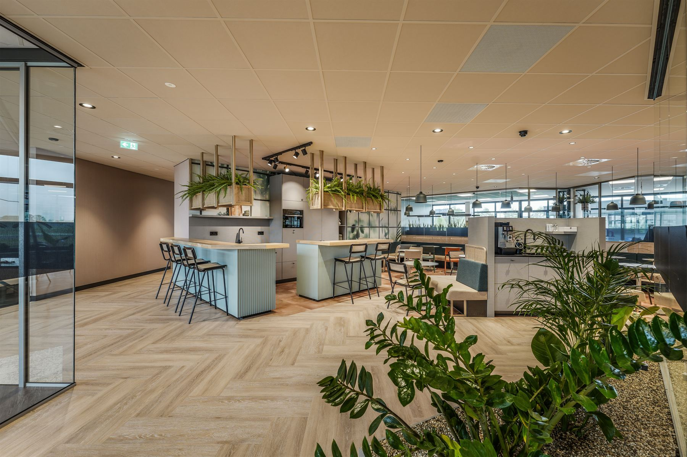

Een groene werkomgeving doet namelijk wonderen. Het is geen geheim dat planten zorgen voor frissere lucht, minder stress en een flinke dosis nieuwe energie en productiviteit. Maar voor mij is kantoorbeplanting veel meer dan alleen ergens een verdwaalde kantoorplant neerzetten. Ik geloof dat groen op de werkplek een saaie werkplek kan veranderen in een inspirerende werkplek waar mensen het beste uit zichzelf kunnen halen. En dat doe ik graag voor je!
Hoe ik dat doe? Door de uitstraling en de behoeften van jullie organisatie te vertalen naar een plan op maat. Of je nu op zoek bent naar subtiele, stijlvolle accenten of juist een grootse, op maat gemaakte groene oase — ik kijk naar de ruimte, de lichtinval, luchtvochtigheid en jullie wensen, en zorg voor een resultaat dat past bij jullie omgeving.
Elke ruimte is anders. Factoren zoals lichtinval, temperatuur en luchtvochtigheid spelen een grote rol in de keuze voor de juiste beplanting. In omgevingen met bijvoorbeeld veel glas, airconditioning of beperkte daglichttoetreding is niet iedere plant geschikt.
Daarom kijk ik altijd naar een oplossing die niet alleen mooi is, maar ook duurzaam functioneert.

Voor kantoorbeplanting werk ik veel met hydrocultuur en semi-hydrocultuur — systemen die speciaal ontwikkeld zijn voor binnenruimtes en weinig onderhoud vragen.
Hydrocultuurplanten staan in een waterreservoir met een speciaal kleikorrelsubstraat. Ze nemen zelf de benodigde hoeveelheid water op, wat zorgt voor een stabiele en gecontroleerde groei. Dit maakt ze bijzonder geschikt voor kantoren.
Een combinatie van traditionele potgrond en een waterregulerend systeem. De plant blijft in (aangepaste) grond staan, maar profiteert van een gelijkmatigere waterverdeling. Meer flexibiliteit in plantkeuze en uitstraling, terwijl het onderhoud eenvoudig blijft.
Voor interieurbeplanting is het sinds kort voor mij ook mogelijk om flexibele, modulaire systemen aan te bieden van Mobilane. Deze worden gevuld met substraat, drainage en beplanting. Welke vorm ik hiervoor kies heeft te maken met de situatie en de behoeften van jou als klant. Dit kunnen onder andere LivePictures, LiveDividers of LivePanels zijn als het gaat om kantoorbeplanting.
Als dit je aanspreekt zal ik hierover advies geven en dit mogelijk maken naar jouw wensen! Kijk gerust op de site van Mobilane voor meer beelden of informatie, of neem vrijblijvend contact op. Ik beantwoord je vragen graag!
Wil je wel die frisse, groene sfeer op kantoor, maar heb je ruimtes waar echte planten het gewoon niet redden? Geen probleem, ook hiervoor is een oplossing!
Ruimtes met te weinig daglicht, gecoat glas of een lastige luchtvochtigheid — echte planten hebben het daar zwaar, wat vaak leidt tot teleurstellende resultaten en onnodige onderhoudskosten. Met hoogwaardige, levensechte kunstplanten creëer ik toch die gezellige en verzorgde uitstraling, maar dan zonder de kopzorgen. Ze hebben geen druppel water nodig en staan er het hele jaar door stralend bij.
En het mooiste van kunstplanten? Ze geven vrijheid in de inrichting! We kunnen ze echt overal toepassen. Samen kijken we hoe we jouw werkplek groen en sfeervol maken, met planten die perfect in vorm en kleur blijven. Wel de lusten, niet de lasten!
Afhankelijk van de situatie en wensen adviseer ik welk systeem het beste aansluit bij de ruimte. Zo ontstaat een groene werkomgeving die niet alleen mooi oogt, maar ook praktisch en duurzaam is in gebruik.
Neem contact op — ik denk graag met je mee.
(Tip: Stuur de link subtiel door naar je baas)